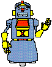

Science fiction is an incubator for imaginative minds to create visions that help us to glimpse not only the future, but also something about ourselves in the present. Fueled by the extrapolation of "what is" into "what can be", science fiction transports us beyond the horizon of our current technologies enabling us to observe the possible incarnations of scientific progress and to experience and appreciate the many ways this may impact upon us. For example, George Orwell's classic work, 1984, introduced the notion of an omnipresent "Big Brother" and served as a focal point for discussion about our attitudes, perceptions, hopes and fears about technology, society, and how they intertwine. Also, the concept of rules of ethical conduct for robots was introduced as ‘Three Laws of Robotics’ by U.S. author Isaac Asimov in his book Runaround originally published in 1942.
Science fiction is an incubator for imaginative minds to create visions that help us to glimpse not only the future, but also something about ourselves in the present. Fueled by the extrapolation of "what is" into "what can be", science fiction transports us beyond the horizon of our current technologies enabling us to observe the possible incarnations of scientific progress and to experience and appreciate the many ways this may impact upon us. For example, George Orwell's classic work, 1984, introduced the notion of an omnipresent "Big Brother" and served as a focal point for discussion about our attitudes, perceptions, hopes and fears about technology, society, and how they intertwine. Also, the concept of rules of ethical conduct for robots was introduced as ‘Three Laws of Robotics’ by U.S. author Isaac Asimov in his book Runaround originally published in 1942.
On Science Fiction - How it influences the imaginations of technologists. By Jason Pontin. Technology Review (March 12, 2007; from the March / April 2007 issue). "To this day, my tastes and choices as an editor and journalist are bluntly science fictional: I look for technologies that are in themselves ingenious and that have the potential to change our established ways of doing things. Best of all, I like technologies that expand our sense of what it might mean to be human. In this, I believe, I am an entirely conventional technologist. Most of us came to technology through science fiction; our imaginations remain secretly moved by science-fictional ideas. ... Robots first appeared in Karel Capek's play R.U.R. in 1921. Indeed, it is more useful to ask, What hasn't SF predicted? But the prescriptive power of science fiction has functioned both positively and negatively. Older computer scientists and electrical engineers such as Marvin Minsky and Seymour Cray, born in the mid-1920s, pursued a vision of humanlike artificial intelligence and mainframe computing popularized by science fiction after World War II (see Isaac Asimov's 'Multivac' stories)."
Rise of the Machines - Isaac Asimov turned androids into pop culture icons - and invented the science of robotics in the process. Now his classic I, Robot hits the big screen. By Cory Doctorow. Wired Magazine (July 2004; Issue 12.07). "This July, [Alex] Proyas turns again to his favored genre with I, Robot , an adaptation of Asimov's nine-story collection of the same name. ... As with all of Asimov's stories, the movie revolves around his Three Laws of Robotics, a set of rules governing android behavior. The central mystery: How could a robot programmed not to harm a human actually commit murder? Isaac Asimov wrote some 500 novels and short stories in his lifetime, and more than a thousand nonfiction essays. ... He penned dozens of stories devoted to androids with positronic brains, a term he invented to suggest an intelligent being, and coined the neologism robotics in the process. ... [H]e set out to reform the robot's bad rap, by making machines an example of how the world could be bettered through the mastery of technology. It embodied his hope for a rational, humanist way of being - the best and the worst of what it means to be a hairless ape. The robot was artificial intelligence in a man's shape, a foil for asking what it means to be human and what rules should govern us. With optimistic flourish, he believed robots could serve as an example of man's potential."